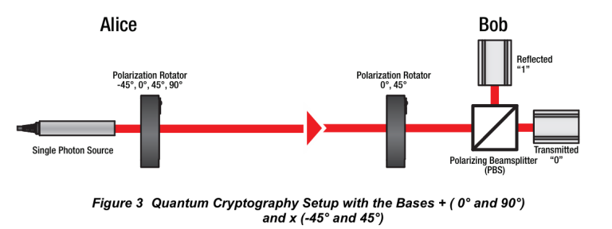
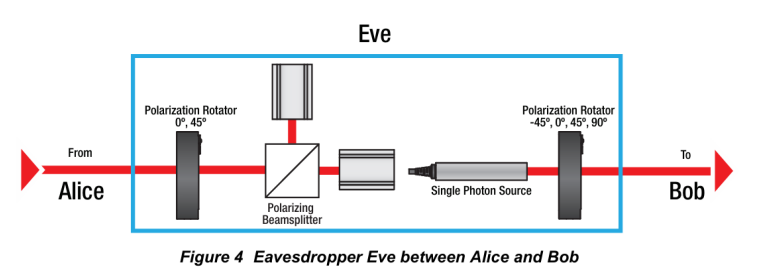

Aim
To demonstrate the principles of quantum cryptography using the BB84 protocol and to detect eavesdropping during quantum key distribution (QKD) through polarization-based encoding.
Apparatus
- EDU-QCRY1/M Quantum Cryptography Demonstration Kit
- Laser Diode Module (CPS635R-C2)
- Polarization Rotators (λ/2 Plates)
- Polarizing Beamsplitters (PBS)
- Optical Breadboards and Mounting Hardware
- Sensors and Sensor Electronics
- Laser Electronics
- Power Supply
- Protective Gloves
Theory
Quantum cryptography uses principles of quantum mechanics to securely transmit information. The BB84 protocol is one of the most well-known quantum key distribution (QKD) methods. It enables two users, Alice and Bob, to establish a shared secret key with the ability to detect any eavesdropping by a third party (Eve).
One-Time Pad
A one-time pad is an encryption technique that is unbreakable if:
- The key is as long as the message,
- The key is used only once,
- The key is truly random,
- The key is known only to the sender and receiver.
Encryption is done by performing a bitwise XOR between the message and the key.
Quantum Key Distribution with BB84
BB84 uses the polarization of photons to encode bits. Alice sends photons randomly polarized in one of two bases:
- + basis (rectilinear): 0° for bit 0, 90° for bit 1
- × basis (diagonal): -45° for bit 0, 45° for bit 1
Bob also measures the incoming photons using a randomly chosen basis. After transmission, they publicly compare bases and keep only the bits where their bases match.

Eavesdropper Detection
Eve cannot copy or measure a quantum state without disturbing it (No-Cloning Theorem). If Eve measures in the wrong basis, it introduces detectable errors. By comparing a subset of the key, Alice and Bob can estimate the error rate. A high error rate (e.g., ~ 25% ) suggests eavesdropping.

Procedure
- Setup: Assemble laser, polarizers, PBS, detectors, and electronics. Align the laser for horizontal polarization.
- Key Transmission:
- Alice randomly selects a bit and a basis (+ or ×), sets the polarization, and sends the photon.
- Bob randomly selects a basis and records the measurement outcome.
- Basis Comparison:
- Alice and Bob publicly announce their basis choices.
- They retain only the bits where their bases matched - this forms the raw key.
- Eavesdropper Detection:
- Alice and Bob compare a subset of the key.
- If the error rate is high ~ 25%, Eve is detected and the key is discarded.
- Otherwise, they proceed with the final key (excluding test bits).
- Message Encryption and Decryption:
- Alice encrypts a message using the final key and one-time pad XOR.
- She sends the encrypted message.
- Bob decrypts it using the same key.
Observations
BB84 Protocol Run
The following table presents a sample run of the BB84 protocol between Alice and Bob. Only the bits where Alice and Bob used the same basis are included in the generated key. If the bases differ, the measurement is either discarded or considered random due to quantum uncertainty.
| Alice's Bit | Basis (Alice) | Angle (\( ^\circ \)) | Basis (Bob) | Measured Bit | Generated Key |
|---|---|---|---|---|---|
| 1 | Plus | 90 | Plus | 1 | 1 |
| 1 | Cross | 45 | Plus | 1 | - |
| 0 | Plus | 0 | Cross | 1 | - |
| 0 | Cross | -45 | Cross | 0 | 0 |
| 0 | Plus | 0 | Plus | 0 | 0 |
| 0 | Cross | -45 | Plus | Random | - |
| 1 | Plus | 90 | Plus | 1 | 1 |
| 1 | Cross | 45 | Cross | 1 | 1 |
| 1 | Plus | 90 | Cross | 0 | - |
| 1 | Cross | 45 | Cross | 1 | 1 |
| 0 | Plus | 0 | Plus | 0 | 0 |
| 1 | Cross | 45 | Plus | 1 | - |
| 1 | Plus | 90 | Plus | 1 | 1 |
| 0 | Cross | -45 | Plus | Random | - |
| 1 | Plus | 90 | Cross | Random | - |
| 1 | Cross | 45 | Cross | 1 | 1 |
| 0 | Plus | 0 | Cross | 1 | - |
| 0 | Cross | -45 | Cross | 0 | 0 |
Final Generated Key: 1001110110
Key Length: 10 bits (from 18 trials)
Note: "Random" or mismatched bases lead to discarded measurements, maintaining security and integrity of the key.
Encryption and Decryption of the Word "AA"
Each character is represented using 5-bit binary encoding. For "A", the binary code is assumed to be 00000. Therefore, the word "AA" is encoded as:
| A | A | |||||||||
|---|---|---|---|---|---|---|---|---|---|---|
| 0 | 1 | 2 | 3 | 4 | 5 | 6 | 7 | 8 | 9 | |
| Binary Word | 0 | 0 | 0 | 0 | 0 | 0 | 0 | 0 | 0 | 0 |
| Key | 1 | 0 | 0 | 1 | 1 | 1 | 0 | 1 | 1 | 0 |
| Encrypted Bits | 1 | 0 | 0 | 1 | 1 | 1 | 0 | 1 | 1 | 0 |
| A | A | |||||||||
|---|---|---|---|---|---|---|---|---|---|---|
| 0 | 1 | 2 | 3 | 4 | 5 | 6 | 7 | 8 | 9 | |
| Encrypted Bits | 1 | 0 | 0 | 1 | 1 | 0 | 1 | 1 | 0 | 0 |
| Key | 1 | 0 | 0 | 1 | 1 | 1 | 0 | 1 | 1 | 0 |
| Decrypted Bits | 0 | 0 | 0 | 0 | 0 | 0 | 0 | 0 | 0 | 0 |
| Word | A | A | ||||||||
Detection of Eavesdropping in BB84 Protocol
A quantum key distribution scenario where an eavesdropper (Eve) intercepts and measures the photons before sending them to Bob. Due to quantum disturbance, mismatched bases introduce errors that can be detected statistically.
| Trial | Alice's Bit | Alice's Basis | Eve's Basis | Bob's Basis | Bob's Bit | Bases Match? | Error Detected? |
|---|---|---|---|---|---|---|---|
| 1 | 1 | Plus | Plus | Plus | 1 | Yes | No |
| 2 | 0 | Cross | Plus | Cross | 1 | Yes | Yes |
| 3 | 1 | Plus | Cross | Plus | 0 | Yes | Yes |
| 4 | 0 | Cross | Cross | Cross | 0 | Yes | No |
| 5 | 1 | Plus | Plus | Plus | 1 | Yes | No |
| 6 | 0 | Cross | Plus | Plus | 1 | No | - |
| 7 | 1 | Cross | Plus | Cross | 1 | Yes | - |
| 8 | 1 | Cross | Cross | Cross | 1 | Yes | No |
| 9 | 0 | Plus | Cross | Plus | 1 | Yes | Yes |
| 10 | 0 | Cross | Plus | Cross | 0 | Yes | No |
Analysis:
- Trials with matching bases (Alice = Bob): 8
- Errors observed in those 8 trials: 3
- Error Rate: 3 out of 8 => 37.5%
Since the observed error rate exceeds the acceptable threshold ~ 25% , this indicates the presence of an eavesdropper (Eve). Alice and Bob should discard the key and restart the process.
Conclusion
The experiment successfully demonstrated secure key generation using quantum cryptography based on the BB84 protocol. The presence of an eavesdropper (Eve) was detected through a statistical increase in error rate. This validates the principle that quantum mechanics enables fundamentally secure communication.